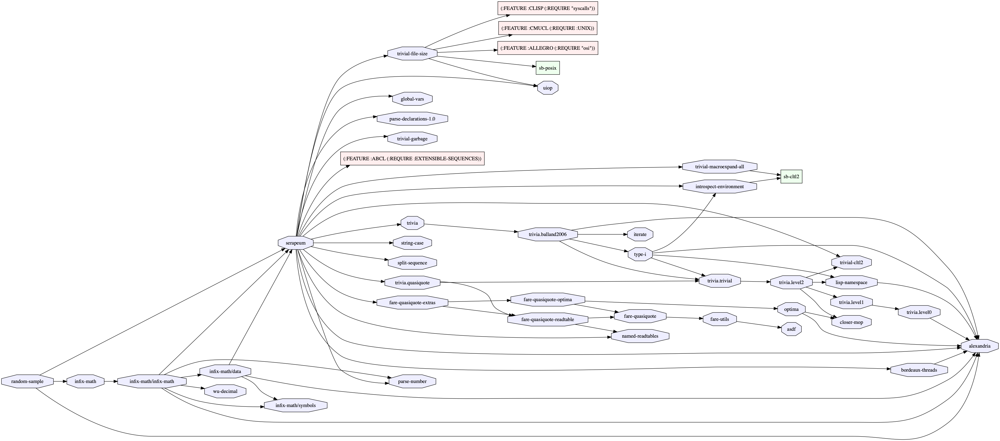

This is a small library to select N random items from given sequence:
POFTHEDAY> (alexandria:iota 100)
(0 1 2 3 4 5 6 7 8 9 10 11 12 13 14 15 16 17 18 19 20 21 22 23 24 25 26 27 28
29 30 31 32 33 34 35 36 37 38 39 40 41 42 43 44 45 46 47 48 49 50 51 52 53 54
55 56 57 58 59 60 61 62 63 64 65 66 67 68 69 70 71 72 73 74 75 76 77 78 79 80
81 82 83 84 85 86 87 88 89 90 91 92 93 94 95 96 97 98 99)
POFTHEDAY> ;; Now we'll select 10 random numbers
POFTHEDAY> (random-sample:random-sample * 10)
(73 38 39 56 26 83 86 62 46 27)
;; It also works for vectors and strings:
POFTHEDAY> #(1 2 3 4 5 6 7 8 9)
#(1 2 3 4 5 6 7 8 9)
POFTHEDAY> (random-sample:random-sample * 4)
(8 2 7 1)
POFTHEDAY>
; No values
POFTHEDAY> (random-sample:random-sample "Hello world!" 4)
(#\e #\o #\H #\ )That is all that it does. But it has 20 dependencies! Why?
POFTHEDAY> (ql:quickload :random-sample)
To load "random-sample":
Load 7 ASDF systems:
alexandria asdf asdf-package-system closer-mop iterate
named-readtables uiop
Install 20 Quicklisp releases:
bordeaux-threads fare-quasiquote fare-utils global-vars
infix-math introspect-environment lisp-namespace optima
parse-declarations parse-number random-sample serapeum
split-sequence string-case trivia trivial-cltl2
trivial-file-size trivial-garbage
trivial-macroexpand-all type-iBy the way, did you know there is a system that helps to visualize dependencies between ASDF systems? Let's try it as a bonus to this short thread!
POFTHEDAY> (ql:quickload :asdf-viz)
POFTHEDAY> (setf cl-dot:*dot-path* "/usr/local/bin/dot")
"/usr/local/bin/dot"
POFTHEDAY> (asdf-viz:visualize-asdf-hierarchy
"random-sample.png"
(list (asdf:find-system :random-sample)))
NILHere are all dependencies of the :random-sample. Most of these, are sub dependencies of the :serapeum:
